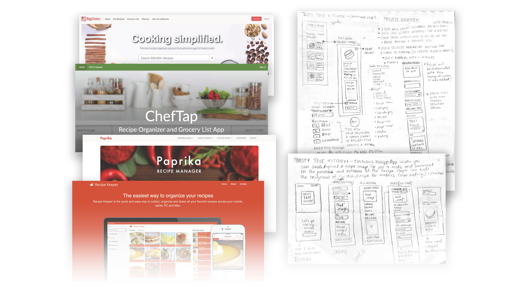

Project Overview
Delish is a digital recipe management app to help users create new recipes, edit, update, delete, and search recipes easily. The goal is to help users curate their recipe collection by testing and rating recipes.
The project was complete within a two-week deadline. The requirements include developing a user persona, conducting user interviews and research for insights to develop the product, user testing, creating high fidelity wireframes, prototypes, using Firebase for database storage and user authentication, build using React, GitHub project tracking, and creating a design system. Other tools and techologies used to build the application: HTML, CSS, JavaScript, ES6, Systematic UI, Styleguidist, Bootstrap, GitHub, Sketch, Photoshop, and Illustrator.
App Competitors
There are many big competitors that offer a lot of bells and whistles with a subscription such as Big Oven, Chef-Tap, Paprika, and Recipe Keeper to name a few. They are impressive but you have to pay to get more bang for your buck out of the apps.
Sketches + Wireframes
After reviewing several competitor websites such as xxxxx I sketched out the initial product layout and architecture.

Wireframes
When came time to work on the wireframes, the designed changed based on some user feedback. Taking into consideration the feedback, it was a better resolution to display the quiz questions in a linear column rather than horizontal display of questions.

The design changed again during the site prototyping to include ....
The Delish project can be view onGitHub.